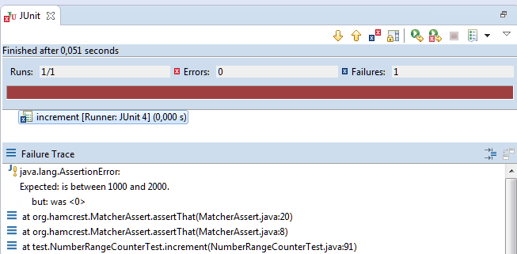

Testing Software
Quality from the Beginning
Developers are responsible for shipped softwares quality
Later never comes ...
When to write tests
not later than right after implementation
It will cost Time
but everyone will profit
why do we need tests?
- find bugs
- ensure functionality
- make refactoring even possible
Types of Test

Functional
once a day or in loop
Integration
after every commit, before every merge
Unit
after every save, before every commit
Avoid test bloating
- modular test sets
- decide which tests are important to run every time
false security of code coverage
"Low code coverage indicate inadequat testing,
but high code coverage guarantees nothing"
Test your Tests

try to break your colleagues test
speaking fail messages
Working with legacy code
- @spy creates hybrid (partly mocked class)
- not sure any more if current part mocked or not
Test best practices
Mocking return values
non-void methods
when(listMock.get(anyString()))
.thenReturn(listEntry);
void methods
doReturn(false)
.when(listMock)
.add(anyString());
Mocking exceptions
when(listMock.add(anyString()))
.thenThrow(IllegalStateException.class);
Mocking multiple calls
when(listMock.get(anyString()))
.thenReturn(listEntry)
.thenThrow(IllegalStateException.class);
Use your framework (@InjectMocks)
public class UnitServiceTest {
@Mock UnitDao unitDao;
@Mock ClassToInstanciate cTi;
@InjectMocks UnitService unitService = new UnitService();
@Before void setup() {
MockitoAnnotations.initMocks(this);
}
}
public class UnitService {
private UnitService unitService;
private ClassToInstanciate cTi;
private ClassToInstanciate getCTI() {
if(cTi == null) return cTi = new ClassToInstanciate();
}
}Use lazy Initializer
Mock precisely
Makes sure the parameters are the way you expect them, control your tests
when(mock.doWork(
anyString(), anyString(), anyInt(), anyBoolean()))
.thenReturn(listEntry);
vs
when(mock.doWork(
"B2B", "test@user.com", 1, true))
.thenReturn(listEntry);
Reflection Equal
Person verifyPerson = new Person("Karthik", "abc@xyz.com");
Mockito.verify(manager)
.savePerson(Mockito.refEq(verifyPerson));
also able to ignore fields
Write your own matcher
Mockito.verify(manager).savePerson(
Mockito.argThat(new ArgumentMatcher() {
@Override
public boolean matches(Object argument) {
Person person = (Person) argument;
return person.getName().equals("Karthik")
&& person.getEmail().equals("abc@xyz.com")
? true : false;
}
}));
Verify with verify
verify(requestMock).getAttribute("email");
verify(requestMock, times(2)).getAttribute(anyString());
verify(requestMock, never()).getAttribute(anyString());
verifyNoMoreInteractions(requestMock);
Unprecisely
verify(requestMock, atLeastOnce()).getAttribute(anyString());
verify(requestMock, atLeast(4)).getAttribute(anyString());
verify(requestMock, atMost(6)).getAttribute(anyString());
never change visibility for testing!
Test private methods through publics